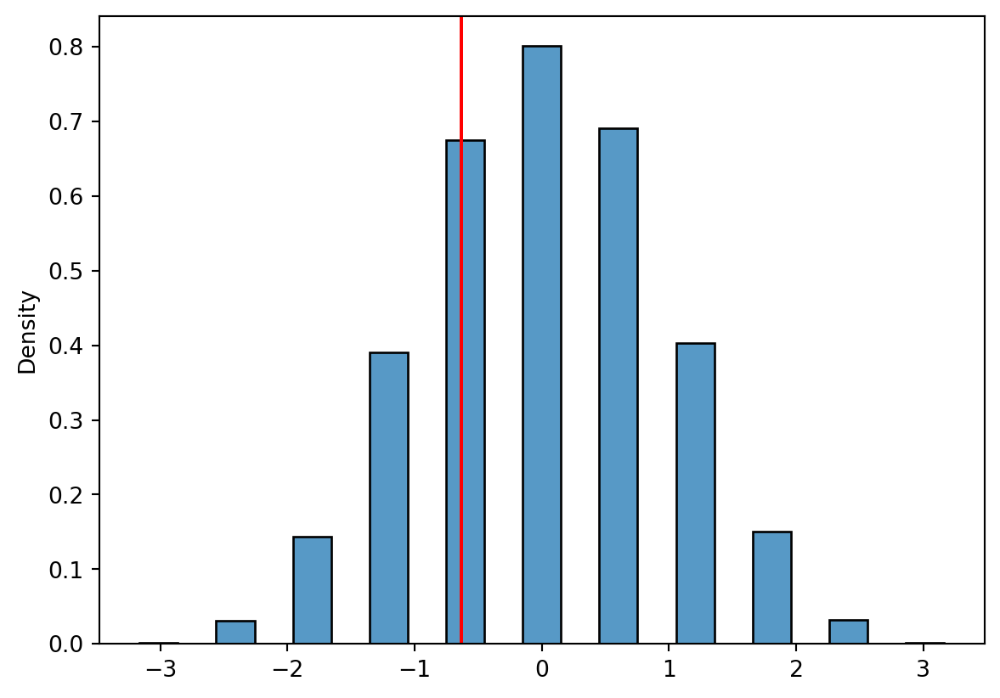

As you can see, the test statistics and corresponding p-values are equal. Since the p-value is high, the evidence against the null-hypothesis is weak, and for a given significance level (say 10%), we would not reject the null of change in expected weight following the diet. The expected weight is equal before and after the diet. Five people is very few for testing a diet, so we could suggest that the investigators collect more data.
Proportions test - one sample
To evaluate whether an observed proportion differs from a specified benchmark, we can carry out a one-sample test of proportions in Python.
As an example, let’s say \(p\) is the probability of heads for a given coin. We want to test if the coin is fair, i.e.
\[H_0: p = 0.5\quad \text{vs}\quad H_A:p\neq 0.5\] with a significance level of 5%. We toss the coin ten times and observe 4 heads.
from scipy import statsfrom statsmodels.stats.proportion import proportions_ztestprop_test = proportions_ztest(count =4, nobs =10, value =0.5, alternative ="two-sided")print(prop_test)
A common rule of thumb is that when \(np>5\), the approximation is good. In this case we are exactly on this common threshold.
Another alternative is to use a bootstrap approach for testing.
np.random.seed(12345)import seaborn as snsimport matplotlib.pyplot as pltsample_size =10count =4phat = stats.binom.rvs(n=sample_size, p =0.5, size =10000)/sample_sizez = (phat-0.5)/np.sqrt(0.5*0.5/sample_size)z_stat = (count/sample_size -0.5)/np.sqrt(0.5*0.5/sample_size)sns.histplot(z, binwidth =.3, stat ="density")plt.axvline(x=z_stat, color ="red")plt.show()print("Statistic: ", np.round(z_stat,3),"\nNumber exceeding: ", (z>z_stat).sum(),"\nPercentage: ", np.round((z>z_stat).mean()*100,3),"%")

Statistic: -0.632
Number exceeding: 6261
Percentage: 62.61 %
Two-saple test of proportions
Instead of comparing a proportion to a benchmark value, we can compare proportions between two groups.
Example: A web store wants to test whether changing the color of the “buy” button effects sales (e.g. increases the rate of clicking “buy”). When customers load the website, they assign a 50% chance that the customer sees a blue (group A) or green (group B) buy button. Does changing the color from blue to green increase the rate of customers clicking “buy”?
\[H_0: p_A=p_B\quad \text{vs}\quad p_A < p_B.\] We can accept a high significance level here, since we are not afraid of making type I error (incorrectly rejecting a true null hypothesis). Let us use \(\alpha = 10\%\).
Group
Sample size
Clicks
Rate
A (blue button)
2359
543
23%
B (green button)
2523
606
24%
The observed rate is higher for green button, but lets perform the test in Python:
The experimental setup described above if often called an AB-test. An A/B test is any randomized experiment comparing two versions (A and B) of something to see which performs better on some outcome.
We can do the test also “by hand”. The test statistic is \[Z=\frac{\widehat p_A-\widehat p_B}{\text{SE}},\] where \[
\widehat p_\text{pool} = \frac{\text{Total clicks}}{\text{Total customers}} = \frac{545+606}{2359+2523}=23.58\%
\] and \[\text{SE}=\sqrt{\widehat p_\text{pool}(1-\widehat p_\text{pool})(\frac1{n_1}+\frac1{n_2})}=0.01216\] Thus, \[
Z = \frac{0.23-0.24}{0.01216}=-0.82
\] Note that, if the alternative hypothesis is true, \(p_A\) is smaller than \(p_B\), making \(Z\) negative. So we reject the null hypothesis for small values of Z (i.e. large negative values). To find the p-value,
\[P(Z\le z)=P(Z\le -0.82) = 0.2061\] based on
from scipy.stats import normprint(round(norm.cdf(-0.82),4))
0.2061
With \(\alpha = 10\%\) we would not reject the null hypothesis, since the p-value exceeds the significance level. The evidence does not suggest any difference between the clicking rates for green versus blue buying buttons.